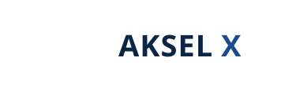

Ideia Central & Estratégia
Conceito
História do símbolo. No centro de cada operação complexa existe um ponto único onde tudo converge: a infraestrutura, os dados, o time, a decisão. O símbolo é um X construído por duas vigas que se cruzam dentro de um perímetro quadrado — o "nó institucional". A moldura representa o enquadramento de uma organização que opera em escala global sem perder o controle.
Justificativa estratégica. Governo, hospitais e indústrias compram confiança antes de comprar tecnologia. A proposta prioriza solidez sobre espetáculo: cores navais institucionais, tipografia arquitetônica (Archivo) e um símbolo que lê como engenharia e governança — não como startup. É a identidade certa para conselhos de administração, editais e contratos de alta criticidade.
Justificativa estratégica. Governo, hospitais e indústrias compram confiança antes de comprar tecnologia. A proposta prioriza solidez sobre espetáculo: cores navais institucionais, tipografia arquitetônica (Archivo) e um símbolo que lê como engenharia e governança — não como startup. É a identidade certa para conselhos de administração, editais e contratos de alta criticidade.
PremiumSóbriaSólidaConfiávelInstitucionalGlobalEstratégica
Símbolo
O Nó Corporativo
Fundo claro
Fundo escuro
Logotipo
Versões oficiais

Horizontal · fundo claro
Horizontal · fundo escuro

Monocromático preto

Monocromático branco
Paleta Cromática
Primária · secundária · apoio
PrimáriaNavy Global#0B2545
RGB 11 37 69 · CMYK 90 55 20 65
Pantone ~196 C
RGB 11 37 69 · CMYK 90 55 20 65
Pantone ~196 C
PrimáriaAzul Corporativo#1B4B8C
RGB 27 75 140 · CMYK 83 60 0 15
Pantone ~286 C
RGB 27 75 140 · CMYK 83 60 0 15
Pantone ~286 C
AcentoSignal Blue#2E5EAA
RGB 46 94 170 · CMYK 73 45 0 15
RGB 46 94 170 · CMYK 73 45 0 15
ApoioSilver Mist#E6ECF2
RGB 230 236 242 · CMYK 8 3 0 3
RGB 230 236 242 · CMYK 8 3 0 3
ApoioSteel#6B7A90
RGB 107 122 144 · CMYK 62 45 25 15
RGB 107 122 144 · CMYK 62 45 25 15
ApoioInk#0D1520
RGB 13 21 32 · CMYK 75 55 40 78
RGB 13 21 32 · CMYK 75 55 40 78
ApoioWhite#FFFFFF
RGB 255 255 255 · CMYK 0 0 0 0
RGB 255 255 255 · CMYK 0 0 0 0
Tipografia
Sistema tipográfico
AKSEL X
Precisão em cada detalhe.
NF-e — protocolo 2026
| Uso | Família | Estilo |
|---|---|---|
| Logotipo / títulos | Archivo | Bold 700, contextuais; letter-spacing −0.5 |
| Corpo / interface | Inter | Regular 400, Medium 500 |
| Dados, protocolos, códigos | IBM Plex Mono | Regular 400 |
Aplicações
Amostras institucionais e digitais
Cartão de visita
App icon
Avatar
AKSEL X
Capa social
Favicon
Diferenciais & Limitações
Leitura honesta
Credibilidade máxima para governo, indústria e saúde.
Excelente reprodução em impressão, gravação e bordado.
Símbolo legível em tamanhos muito pequenos (favicon).
Atemporal: não data visualmente.
Proposta conservadora — menos "wow" em mídias de consumo.
Família tipográfica com caracteres latinos limitados para alguns scripts internacionais.
Em uso 100% branco, recomenda-se reduzir a moldura para ganho de peso.
Arquivos Entregues
03 · Logotipos Vetoriais
PROPOSTA_01/ akselx_horizontal_color.svg — logotipo horizontal colorido akselx_vertical_color.svg — logotipo vertical (empilhado) akselx_simbolo_color.svg — símbolo isolado akselx_mono_black.svg — versão monocromática preta akselx_mono_white.svg — versão monocromática branca akselx_favicon_color.svg — favicon/símbolo reduzido